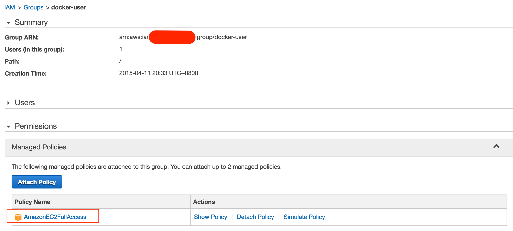
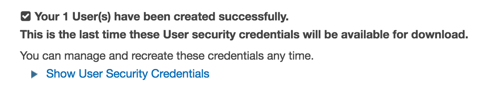
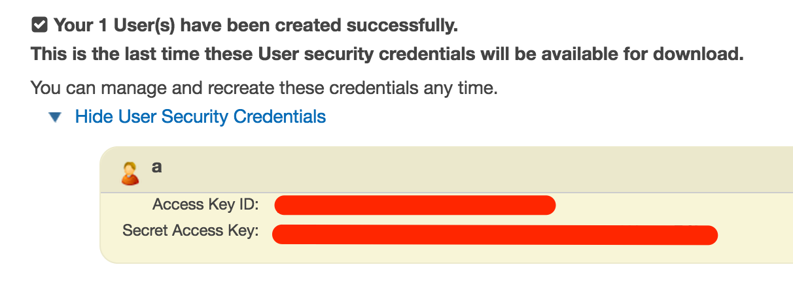
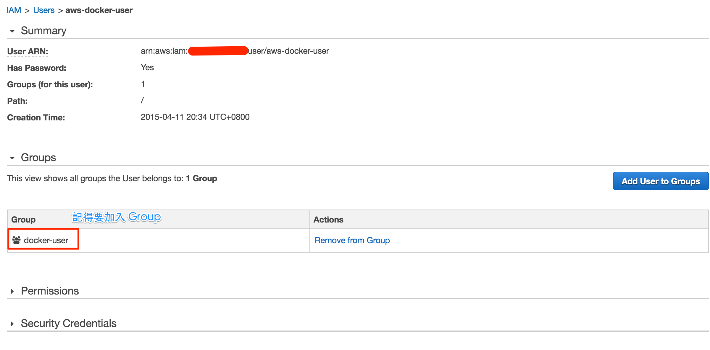
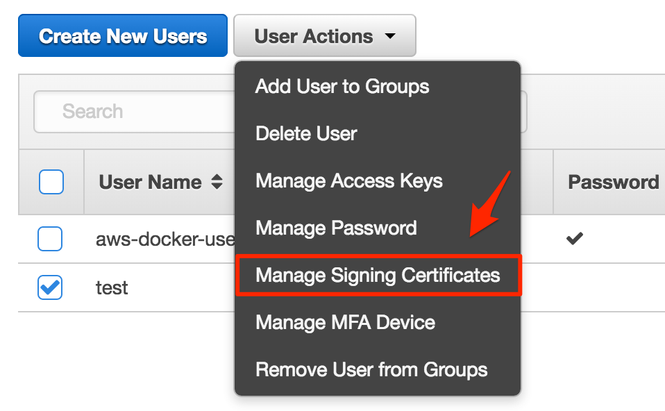
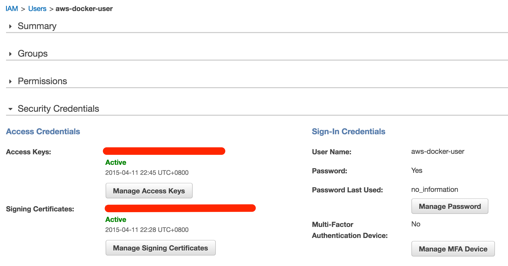
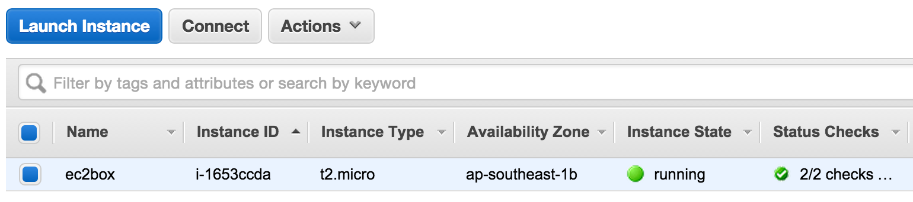

docker-machine for AmazonEC2
前兩天在公司上了 Introduction Docker 的課程，回家就來試驗新的 docker-machine
花了一點時間，研究了怎樣連接到 AWS 去～
如果你打 docker-machine create 這個指令，大概就會出現以下的資料，告訴你要打的參數
1 | NAME: |
2 | create - Create a machine |
3 | |
4 | USAGE: |
5 | command create [command options] [arguments...] |
6 | |
7 | OPTIONS: |
8 | --amazonec2-access-key AWS Access Key [$AWS_ACCESS_KEY_ID] |
9 | --amazonec2-ami AWS machine image [$AWS_AMI] |
10 | --amazonec2-iam-instance-profile AWS IAM Instance Profile |
11 | --amazonec2-instance-type "t2.micro" AWS instance type [$AWS_INSTANCE_TYPE] |
12 | --amazonec2-region "us-east-1" AWS region [$AWS_DEFAULT_REGION] |
13 | --amazonec2-root-size "16" AWS root disk size (in GB) [$AWS_ROOT_SIZE] |
14 | --amazonec2-secret-key AWS Secret Key [$AWS_SECRET_ACCESS_KEY] |
15 | --amazonec2-security-group "docker-machine" AWS VPC security group [$AWS_SECURITY_GROUP] |
16 | --amazonec2-session-token AWS Session Token [$AWS_SESSION_TOKEN] |
17 | --amazonec2-subnet-id AWS VPC subnet id [$AWS_SUBNET_ID] |
18 | --amazonec2-vpc-id AWS VPC id [$AWS_VPC_ID] |
19 | --amazonec2-zone "a" AWS zone for instance (i.e. a,b,c,d,e) [$AWS_ZONE] |
最前面的，就是 aws 所需要的參數。
我找了一下網路的文章，發現這篇是有比較多的說明，針對 docker-machine provider 的部份
http://flurdy.com/docs/docker/docker_compose_machine_swarm_cloud.html
按照這篇文章的作法，大概只需要以下的參數就可以
1 | docker-machine create \ |
2 | --driver amazonec2 \ |
3 | --amazonec2-access-key your-aws-access-key \ |
4 | --amazonec2-secret-key your-aws-secret-key \ |
5 | --amazonec2-vpc-id your-aws-vpc-id \ |
6 | --amazonec2-subnet-id your-aws-subnet-id \ |
7 | --amazonec2-region us-east-1 \ |
8 | --amazonec2-zone a \ |
9 | ec2box |
不過因為我是新手，所以嘗試了蠻多次才找到這些參數到哪邊去做
Access Key/Secret Key
這部份我嘗試最久，因為我其實搞不太懂這是要到哪裡去抓，後來才知道這是要到 IAM 去做的。
Create a group
進到 IAM 之後，先建立一個 Group，步驟很簡單，只要輸入名稱以及選擇 Policy 就好了
名稱隨便 (我是叫 docker-user)
然後記得加入 Policy，我是加入 AmazonEC2FullAccess (也可以給他 Administrator)
建立之後，Group 的資料大概像這樣:

Create a user
接下來建立一個 User， 你一次可以建立五個 User，不過我是先建立一個，接下來的畫面，蠻重要的，他會給你這個 User 的 Security Credentials，這就是我們要的資料了！
Access Key ID 對應的就是 --amazonec2-access-key 參數
Secret Access Key 對應的就是 --amazonec2-secret-key 參數

這邊你可以點選 "Show User Security Credentials" 來顯示 Access Key ID 以及 Security Access Key，或者是點選畫面下方的 "Download Credentials" 把檔案下載下來再看都可以

建立完 User 之後，記得把這個 User 加入到上面我們建立的 Group 去，之後才有權限可以使用 EC2

Generate AWS Signing Certificates
這個步驟也蠻重要的，因為如果你不做這個步驟，其實你建立的 User 是不能呼叫 EC2 的 Web Service 的 (我碰壁了很久.....)
我參考了這篇文章
http://www.markbartel.ca/2012/04/creating-key-pairs-for-amazon-ec2.html
先執行
1 | openssl req -x509 -newkey rsa:2048 -passout pass:a -keyout kx -out cert |
這個步驟是在建立 ssl 證書資料，會需要你填一些東西
1 | Country Name (2 letter code) [AU]: [這邊我是填 TW] |
2 | State or Province Name (full name) [Some-State]: [這邊我是填 Taiwan] |
3 | Locality Name (eg, city) []: [這邊我是填 Taipei] |
4 | Organization Name (eg, company) [Internet Widgits Pty Ltd]: |
5 | Organizational Unit Name (eg, section) []: |
6 | Common Name (e.g. server FQDN or YOUR name) []: |
7 | Email Address []: [這邊填電子郵件] |
沒填的地方我是直接 Enter 就過去了～
這樣會產生 kx, cert 檔案
然後執行以下步驟
1 | openssl rsa -passin pass:a -in kx -out key |
這個步驟會產生 key 檔案
不過我們主要是要用到 cert 這個檔案 (目前我還不知道其他檔案的用途，不過還是建議先保留下來～)
選擇剛剛建立的 User，選擇 Manage Security Credentials 功能，準備上傳 cert 資料

進去功能的第一個畫面是一些說明，你可以直接到下一步驟，把 cert 檔案內容貼到下一個畫面的 Certificate Body 格子內，然後按下 "Upload Signing Certificate" 按鈕就好 ...
如果一切都順利完成，User 的資料就應該像是下面這樣，

這樣，你就可以往下面做了～
Vpc-ID
到 EC2 的介面，去抓到 default security group 的 vpc-id
這就是我們要用的 --amazonec2-vpc-id
Subnet-ID
到 EC2 的介面，到 Network Interfaces 功能，建立一組新的 Network Interface。
(因為蠻簡單的，都用預設值就可以)
然後，找到 subnet-id
這就是 --amazonec2-subnet-id 參數
2014-04-12 14:50 更正： 根據 Docker 官網文件，以及實際測試結果，其實，subnet-id 並不是必要條件，所以，其實可以不要輸入～這也就是我為什麼之前有個疑問是，我自己建立了一個 Network Interface，他卻又會另外建立一個新的 Network Interface 了～我本來以為 subnet-id 是要我提供的～
Create a new docker-machine
把之前的步驟找到的所有參數，組合在一起
至於 --amazonec2-region ，你可以到 Regions and Avaliable Zones 文件中自己去挑選你喜歡的地方
而 --amazonec2-zone，你是要進入到該 region 的 EC2 Dashboard 介面去看他 Service Health 的部份，會告訴你有哪些 Available Zones
像我是挑 Singapore，就是 ap-southeast-1
Zone 的話，我是挑了 b zone
就像這樣～
1 | docker-machine create \ |
2 | --driver amazonec2 \ |
3 | --amazonec2-access-key [Access Key ID] \ |
4 | --amazonec2-secret-key [Secret Access Key] \ |
5 | --amazonec2-vpc-id [Default SecurityGroup VPC ID] \ |
6 | --amazonec2-region ap-southeast-1 \ |
7 | --amazonec2-zone b \ |
8 | ec2box |
最後面的 ec2box 是你要給 docker-machine 的名稱，如果一切都 ok，做完之後你在 EC2 內就會看到一組建立好的 t2.micro instance。

玩完回收
1 | docker-machine rm -f ec2box |
這個指令會把之前建立的 ec2 instance 以及相關的設定都刪掉
因為 AWS 要錢，所以～如果你只是玩玩就好，記得刪掉～
否則收到帳單，我也沒辦法.....
建立時可能發生的問題
如果建立時，發生任何問題，沒有建立成功，你可能都要注意以下事情
- 有可能 docker-machine 資料已經建立，但是無法連上 EC2，這樣的話，你需要自己手動刪除 docker-machine，指令是
docker-machine rm -f ec2box。你可以先用docker-machine ls檢查一下～ - 每次建立的時候，docker-machine 會與 EC2 交換 key-pair，所以如果建立到一半失敗，你得先自己手動到 EC2 把 ec2box 這個 keypair 刪掉再重新建立，不然就會發生 keypair 重複的問題。
- 如果發生 401 的錯誤，請檢查使用者的資料設定是否有問題 (是說按照步驟來應該可以)。
- 你給的 vpc-id 一定要是你建立那個 region/zone 的 default security group vpc-id，不然會告訴你沒有這個 vpc-id